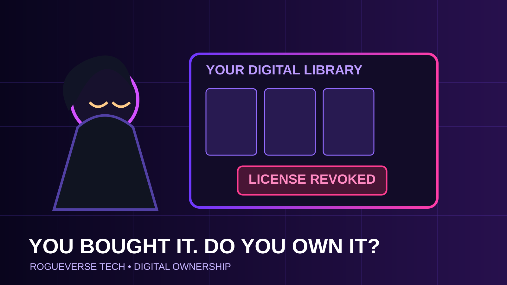

OUR CULTURE / TECH • AUGUST 19, 2026
The Death of “I Bought It”: What Digital Ownership Means in 2026
Games made the problem visible. Movies, books, software, smart devices and cloud-connected hardware show how much larger it really is.

For generations, buying something was a fairly simple transaction. Money changed hands. The product became yours. You could keep it, lend it, sell it, repair it, put it on a shelf or forget about it in a closet for twenty years.
Digital commerce has quietly rewritten that agreement.
Today a button labeled “Buy” can mean permanent ownership, a long-term license, access tied to an account, access dependent on a storefront remaining online, or access that disappears when a publisher shuts down a server. The Federal Trade Commission has explicitly warned consumers that digital games, ebooks, music and movies may be licensed rather than owned and can depend on an active account, platform or continuing rights agreement.
The game industry made the contradiction impossible to ignore
Games are the clearest battlefield because modern titles increasingly combine downloadable software, remote authentication, multiplayer infrastructure and publisher-controlled services. A customer can pay full price and still discover that the product stops functioning when the company operating its servers ends support.
That issue became politically significant in Europe through the “Stop Destroying Videogames” European Citizens’ Initiative. In June 2026, the European Commission said it would engage consumers and publishers by the end of the year on better industry standards for sunsetting games. The Commission stopped short of proposing a blanket legal requirement that every game remain playable forever, citing intellectual-property and technical complications, but it also emphasized that existing EU consumer law already provides protections when digital content ends earlier than buyers could reasonably expect.
The debate is not really about forcing companies to operate expensive servers forever. The harder question is whether a paid product should be designed to become unusable when commercial support ends, even when an offline mode, server handoff or other preservation path could theoretically exist.
“Buy” and “license” are not the same word
The FTC’s consumer guidance gets to the heart of the problem: the practical rights attached to digital goods can differ dramatically from the rights people associate with physical property. DRM may restrict where content runs. Account rules may limit transfers. Licensing disputes can affect availability. A platform failure can strand a library.
None of that automatically makes digital distribution bad. Digital storefronts are convenient, reduce physical manufacturing, enable instant delivery and can keep niche media available long after retail shelves would have dropped it. The problem is clarity. Consumers should know whether they are purchasing durable possession or conditional access.
A healthier market would make those distinctions obvious before checkout rather than hiding them inside terms of service that almost nobody reads.
The issue is bigger than games
The same ownership fog now surrounds movies, music, books, productivity software and connected devices. Subscription software can stop working when payments stop. Smart-home devices may lose important functions when cloud support ends. Connected vehicles increasingly combine hardware ownership with software features controlled by manufacturers.
This produces a strange new class of possession: the object may sit in your home, but part of what makes it useful remains somewhere else on a company’s server.
That matters because ownership has always been more than possession. It is also control. Can you repair it? Can you transfer it? Can you use it without permission? Can the seller materially reduce its usefulness after the sale?
Repair rights are pushing the physical side in the opposite direction
Europe’s new Right to Repair rules, effective July 31, 2026, show another possible direction. Covered manufacturers must make repairs available for technically repairable products under EU law, provide information about repair services and make spare parts accessible at reasonable prices. Choosing repair instead of replacement can also extend the legal guarantee by at least twelve months.
Those rules concern physical goods, but the philosophy overlaps with digital ownership: purchasing a product should carry meaningful rights after the payment clears.
Preservation is not just nostalgia
Games, films, books and software are cultural artifacts. When access is completely dependent on a corporate service remaining online, preservation becomes subject to commercial priorities that can change quickly.
Libraries, museums and private collectors historically preserved culture because physical copies existed outside the control of the original publisher. Digital-only media complicates that relationship. If authentication servers vanish, encryption keys are withdrawn or a storefront closes, preservation can become technically difficult and legally uncertain at exactly the same moment it becomes culturally necessary.
What consumers should demand
There is no single policy that solves every category of digital ownership. A live-service multiplayer game is not an ebook, and neither behaves like a smart thermostat. But some principles travel well across the categories.
First, stores should clearly disclose whether a transaction grants ownership or a revocable license. Second, publishers should state major dependencies such as required servers or mandatory online authentication. Third, companies should plan product end-of-life before launch rather than improvising shutdowns years later. Fourth, repair and preservation should be treated as legitimate parts of product design instead of hostile activity by default.
And finally, consumers should be able to make informed tradeoffs. Some people will gladly exchange control for convenience. Others will pay more for physical media, DRM-free files, repairable hardware or software that works offline. A functioning market needs those alternatives to remain visible.
The RogueVerse Tech verdict
Digital distribution is not killing ownership by itself. Ambiguous transactions are.
The danger arrives when companies preserve all the powers of ownership for themselves while selling customers the emotional experience of ownership. The interface says “Buy.” The legal structure quietly says “access, while conditions permit.”
Technology can make media more accessible than at any point in history. It should also make our rights easier to understand, not harder.
If someone else can remotely take away what you purchased, consumers deserve to know what the word “purchase” actually bought.